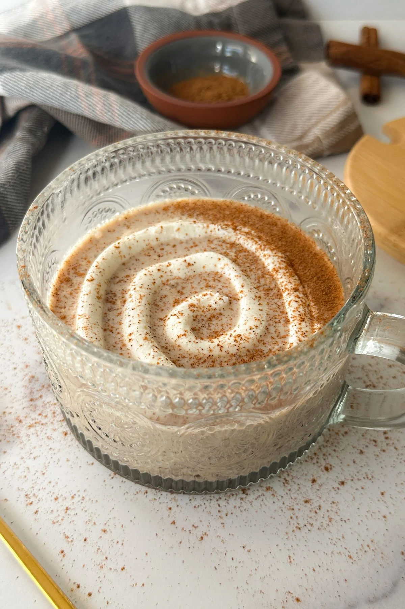

Cinnamon Roll Overnight Oats are creamy, cozy and delicious! These overnight oats are the perfect healthy meal prep breakfast.
Preparation time
5 mins
Cook time
1 mins
Servings
1 people

Ingredients
½ cup old fashioned rolled oats
2 teaspoons ground flaxseed
1 pinch salt
½ teaspoon ground cinnamon
1 teaspoon coconut sugar
2 teaspoons pure maple syrup
¼ teaspoon vanilla extract
¼ cup plain Greek yogurt
½ cup milk
Instructions
Add all the ingredients into a jar or small container.
Blend for about 15-20 seconds just until everything is incorporated. Don’t over blend or the pancakes can become tough. Let the batter rest for 5 minutes.
Put the container in the refrigerator and let it sit overnight.
In the morning, remove the lid and enjoy! You can add other toppings or do a little yogurt swirl on top like I did with a sprinkle of cinnamon.